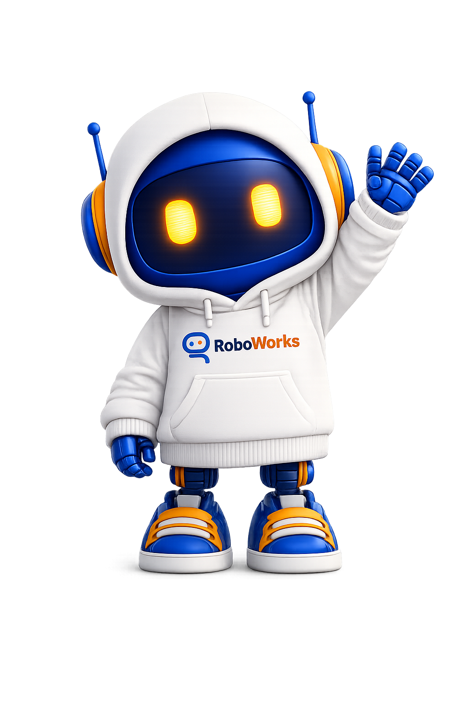

¡Hola, Robotista!
Continúa tu aventura donde la dejaste
0 XP
0 clases completadas
Nivel SPARK
0
Puntos XP
0
Clases completadas
1
Nivel actual
Próxima clase
Cargando...
Tareas pendientes
Cargando...
🚀 Jugar RoboMisión
Tu aventura espacial de programación te espera
¡Jugar! →
NIVEL 1
SPARK
5 – 7 años
Tu primer contacto con la tecnología.
Herramientas de este nivel
Cargando unidades...
Mi Portafolio Digital
Responde el reto de cada clase. Al terminar el nivel, genera tu QR para el certificado.
0 / 26
Compartir mi portafolio
Los papitos pueden ver tu progreso en cualquier momento, aunque no hayas terminado el nivel.
Materiales y Recursos
Cargando materiales...
Mis Tareas
Cargando tareas...